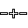
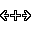
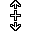

Layers are defined by a set of layer boundaries. Two types of boundaries exist: horizontal boundaries and vertical boundaries. For each ping, a layer is limited by exactly one upper horizontal boundary and one lower horizontal boundary. The layer boundaries are not allowed to cross other layer boundaries. The layer boundaries are connected by yellow square connectors (see the figure below).
School regions are defined by a closed outline. The points inside a school region are excluded from the layers with which the school region overlaps. School regions are not allowed to overlap other school regions, or to extend above/below the uppermost/lowermost layer boundaries.
Layer boundaries and school regions can be created by clicking the button in the toolbar. The Spacebar can be used to cycle through different adding modes:

Add a horizontal boundary at the mouse position when clicking in the echogram. The horizontal boundary will extend to the nearest vertical boundaries to the left and right of the insertion point. If such vertical boundaries do not exist in the visible ping range, vertical boundaries are inserted at the edges of the screen. School regions are not modified.Add a vertical boundary at the mouse position. The vertical boundary will extend to the nearest horizontal boundaries above and below the insertion point. School regions are not modified.
Add a school region by draw or click. Start drawing a school box at the mouse position. Holding the left mouse button down and dragging the mouse extends the school box. Releasing the mouse button creates the school region. Press Esc to cancel. Alternatively, click the left mouse button to grow a school using the current echogram thresholds.
The two modes for adding a layer boundary have corresponding penetrating versions that can be activated by holding down the Ctrl key:

Add a penetrating horizontal boundary at the mouse position when clicking in the echogram. The horizontal boundary will extend through vertical boundaries until the left and right edges of the visible echogram, where vertical boundaries will be inserted if needed. The result is several independent horizontal layer boundaries. School regions are not modified.

Add a vertical divider at the mouse position. All layers with a ping range containing the insertion point will get a vertical boundary at this ping, and all school regions intersecting the insertion point will be split at this ping.If automatic school detection has been performed in a preprocessing step, the detected regions can be transformed into editable school regions by using the context menu. The automatically detected schools will appear with a purple outline. By moving the mouse close to the outline and then right-clicking, a menu option will appear to transform the region.
The layers and schools can be edited with the button in the toolbar. The default action in this mode is selection of regions. Regions can be selected by clicking in the interior of the regions. Dragging the mouse over several regions selects all regions intersecting the dragged box. Holding Ctrl down while dragging selects unselected regions and unselects selected regions. Press Ctrl + A to select all currently visible regions in the survey.
When the mouse is close enough to a region boundary, the cursor will change:
Keyboard shortcuts:
The following table summarizes the edit mode.
| Mouse location | Sub-modes |
|---|---|
| None of the locations below | Select |
| Draw | |
| Horizontal layer boundary | Select |
| Draw | |
| Move vertically | |
| Vertical layer boundary | Select |
| Move horizontally | |
| Connector point | Select |
| Move | |
| School outline | Select |
| Draw | |
| Move school | |
| Split school | |
| Move rectangular school edges | |
| School interior | Select |
| Move | |
| Scale | |
| Draw |
Layers can be merged with other layers by selecting all layers to be merged, right-clicking in the echogram window and choosing Merge layers from the context menu. Alternatively, use the Region menu and choose Merge layers (shortcut Ctrl + M). The resulting layer after a merge must be such that exactly one upper horizontal boundary and one lower horizontal boundary exist per ping. If this is not the case, the merge operation will be aborted and only partially carried out. Also note that if a region extends beyond the visible range, vertical dividers will be inserted to isolate the visible ping range before the merge operation.
Schools can be deleted by right-clicking inside the school, and
choosing Delete school from the context menu.
Alternatively, select one or more schools and choose Delete active schools in the Region menu.
Schools can also be merged by selecting two schools, and choosing Merge schools from the context menu. Schools can only be merged if their ping ranges do not intersect.